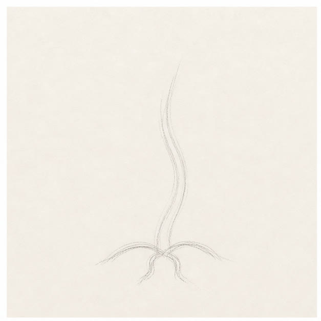
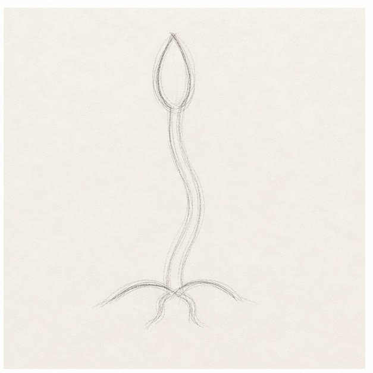
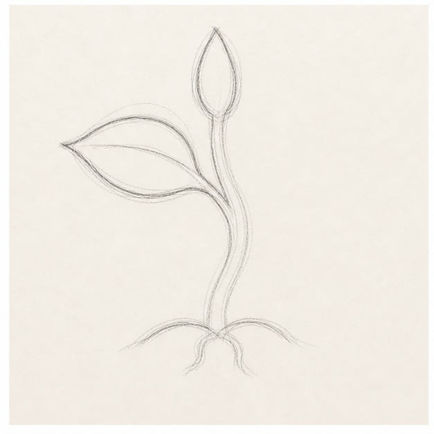
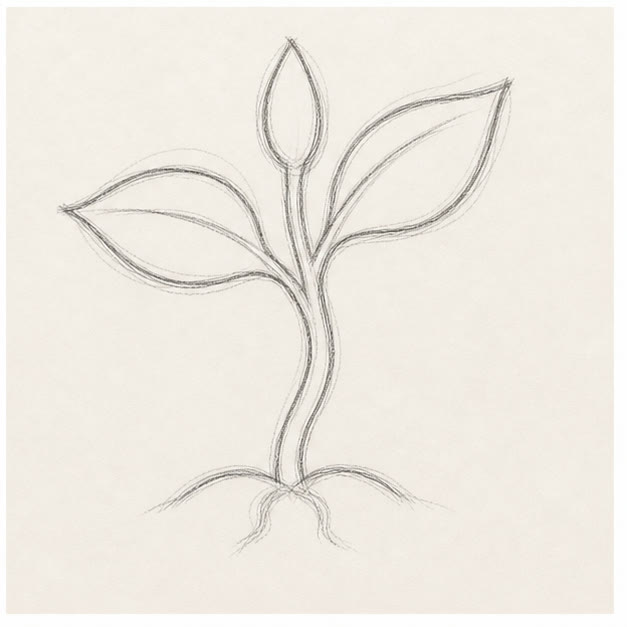

From the archive
Let's draw a sprouting seed
Work lightly through the construction, then darken only the lines that help the finished sketch.
-
01

Draw the stem's path
Make one light vertical curve from the soil upward. Add a shallow arc underneath for the ground.
Sketch tip: A stem rarely grows ruler-straight. Give yours one small lean or bend.
-
02

Open the top bud
At the top of the stem, draw two curved sides that meet in a point, like a narrow almond.
Sketch tip: Keep the bud centered over the stem so the plant feels balanced before adding side leaves.
-
03

Grow the left leaf
Branch left from the stem and build a pointed leaf with two broad curves. Bring its center vein back to the stem.
Sketch tip: Let the bottom curve sag a little more than the top curve. That gives the leaf weight.
-
04

Balance it with a right leaf
Repeat the leaf shape on the right, placing it slightly higher and turning its point upward.
Sketch tip: The leaves should feel related, not mirrored. Small differences make the plant feel alive.
-
05

Add roots and green
Sketch two tiny roots below the soil line, then loosely shade the leaves with green pencil.
Sketch tip: Follow each leaf's direction with your color strokes instead of coloring straight across it.